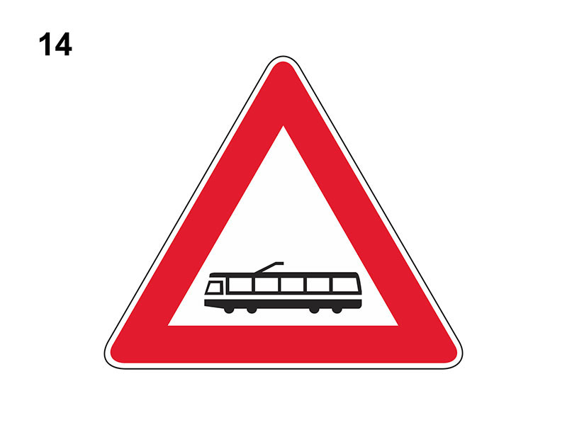

Attraversamento tranviario

E' un segnale di pericolo che preannuncia (di norma a 150 metri) l'incrocio con una linea tranviaria non regolata da semafori (sia dentro che fuori i centri abitati).
Essa riduce lo spazio utile per la circolazione dei veicoli.
Il conducente deve porre maggiore attenzione per non intralciare la marcia del tram.
In presenza del segnale:
Non è vero che interessa il transito dei filobus o che può essere integrato da un dispositivo a luci rosse.
Essa riduce lo spazio utile per la circolazione dei veicoli.
Il conducente deve porre maggiore attenzione per non intralciare la marcia del tram.
In presenza del segnale:
- si può sorpassare a destra il tram in marcia se vi è lo spazio necessario
- si può sorpassare a destra il tram fermo al centro della strada per la salita e discesa dei passeggeri, solo se esiste l'apposito salvagente
- si può circolare sui binari senza intralciare la marcia del tram
- si deve fare attenzione agli eventuali pedoni presenti alla fermata del tram
- bisogna fare attenzione alla possibile diminuzione di aderenza delle ruote del veicolo se si frena sui binari
- occorre tenere presente che il tram necessita di una distanza di arresto maggiore di quella degli autoveicoli
Non è vero che interessa il transito dei filobus o che può essere integrato da un dispositivo a luci rosse.